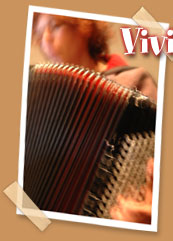

|  | |||
|
Issue d’un Doubs coin de Franche-Comté. Prélude idéal à l’épanouissement de l’accordéon qu’elle fait valswinguer depuis l’âge de quatre ans par delà les musiques du monde, le rock et le jazz. |
|||
| •
CD et tournées avec Hugues Aufray (4 albums), Ray Lema, Baba Djan,
Kekele, Thomas Pitiot (2), Céline Caussimon. Tournées avec
I Muvrini, Sam Mangwana, Corinne... • Enregistrements avec So Kalmery, Nana Mouskouri, Bushman, Georgian Legend, Limborg (3), Yannick Top et pour une publicité d’Yves Saint-Laurent... • Compositions pour courts métrages, spectacles de danse et chansons. |
|||
|
|
|||